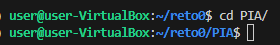
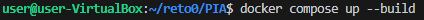

Guia de Instalación del proyecto
Este repositorio contiene las imagenes de Grafana, InfluxDB y Node-red, si las tienes instaladas en tu maquina linux, desactivalas.
Compatibilidad
- Linux
Paso 1
-
Nos descargamos el proyecto siguiendo la guia oficial de Github, nos tiene que quedar tal que así:

Paso 2
-
En la terminal (ya sea en la propia maquina o atraves de ssh) nos desplazamos a la carpeta PIA.

Paso 3
-
Despues, en esa misma terminal ejecutamos el siguiente comando, veremos como se empieza a descargar las imagenes y dependencias de todo lo que tiene que usar, tarda un poco:

-
Si queremos desentendernos de lo que hace por detras le podemos añadir esto al comando:
bash docker compose up --build -d - Este comando solo lo ejecutaremos la vez que nos descarguemos el proyecto, a partir de ahi tenemos las imagenes descargadas, si repetimos el mismo comando de arriba nos descargara otra vez las imagenes, por eso en futuras instancias ejecutamos el siguiente comando:
bash docker compose up -d
Paso 4
- Despues de que se descargue y se despliegue todo podemos entrar dentro de la maquina y entrar a traves de un explorador web en los distintos servicios. Los usuarios y contraseñas de los distintos servicios son los siguientes:
- Grafana
- usuario: admin
- contraseña: admin
- Influxdb
- usuario: cryptobro
- contraseña: criptobro12345
- Grafana
Paso 5
- Una vez que hayamos hecho todo lo que queramos con los servicios, para apagarlos insertamos el siguiente comando:
bash docker compose down